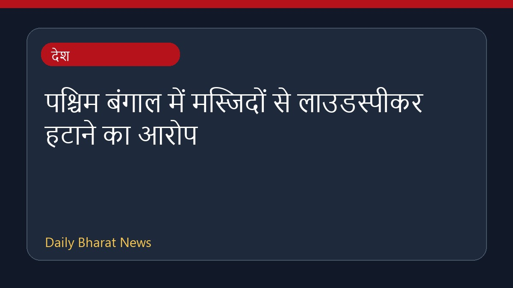

पश्चिम बंगाल में मस्जिदों से लाउडस्पीकर हटाने का आरोप

मुस्लिम नेताओं का दावा है कि पश्चिम बंगाल में पुलिस मस्जिदों से लाउडस्पीकर हटाने के लिए दबाव बना रही है। रिपोर्ट के अनुसार, राज्य में शोर के नियमों का हवाला देते हुए कुछ हिस्सों में मस्जिदों और मंदिरों से लाउडस्पीकर हटाए गए हैं। इस बीच, नेताओं ने इस कार्रवाई को रोकने के लिए हस्तक्षेप की मांग की है और पुलिस पर आरोप लगाए हैं। इस मामले को लेकर विभिन्न प्रतिक्रियाएं सामने आ रही हैं, हालांकि विवरण अभी सीमित हैं।
मूल स्रोत: India News Sources
Bengal cops pressuring mosques to remove loudspeakers, claim Muslim leaders - indiatoday.in ↗
Bengal cops pressuring mosques to remove loudspeakers, claim Muslim leaders - indiatoday.in ↗